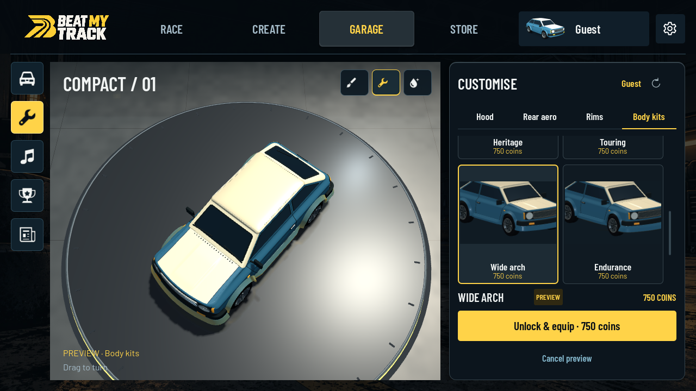
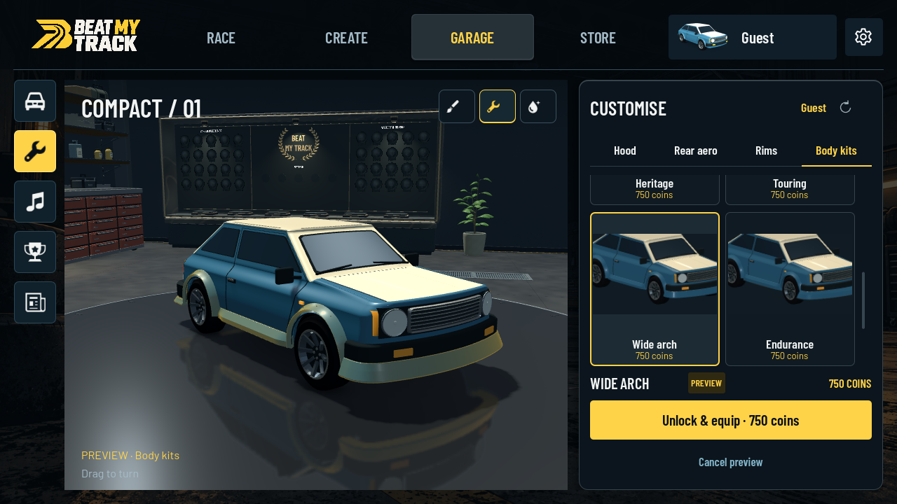
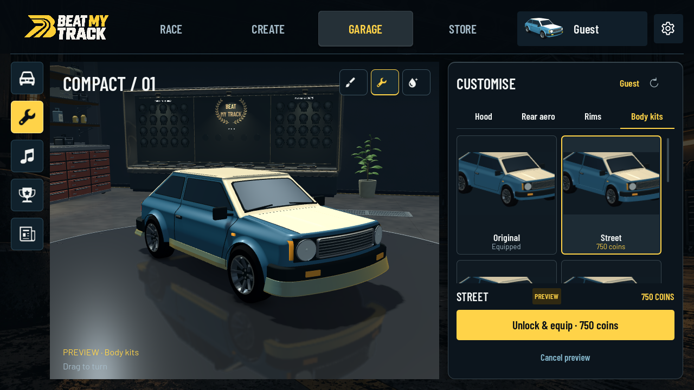
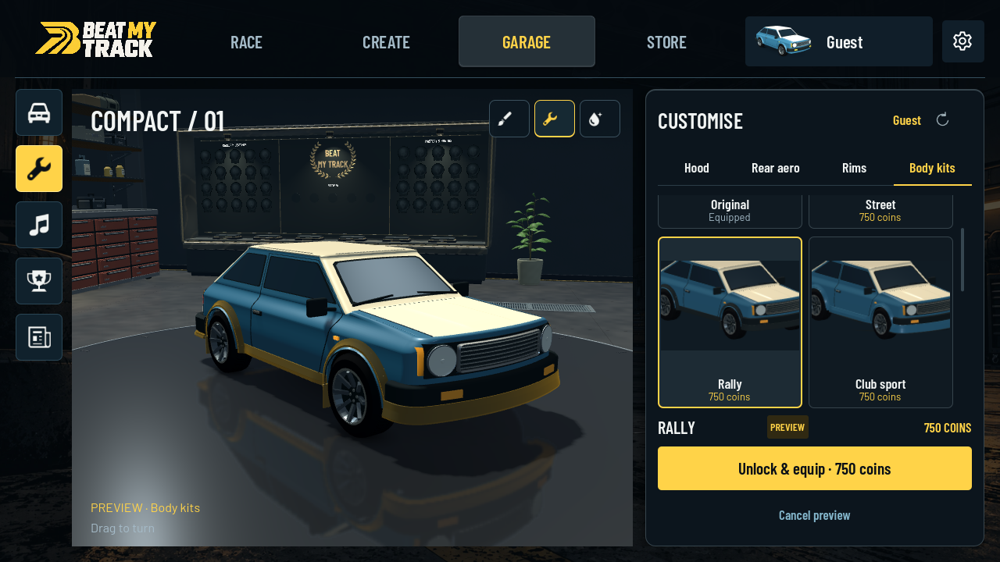
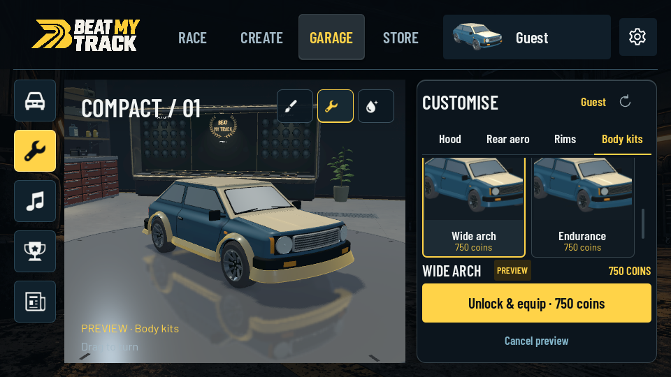

Garage Body kits: low three-quarter view
Actual native App captures. Body kits now has its own low camera angle, independent of an elevated Garage, Hood or Roof view. The full selected kit stays in the main Garage view, with options on the right. Patterns and Colours keep their previous framing.

Before: Wide arch inherits the elevated Garage angle.

After: the same kit, low front and side view.

Street kit.

Rally kit.

Compact layout: 960 × 540, desktop Mobile.
All ten options are checked at three window sizes for viewing angle, front/side direction, model bounds and retained preview/save state. Recorded commands and actual outcomes. Desktop renderers only; no device attachment check or phone test, APK, real purchase, deployment or owner-process restart.